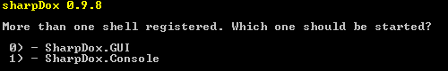
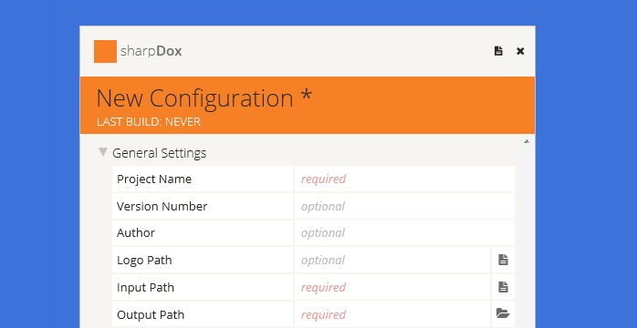

Building code documentation with sharpDox is really easy. Just download it, extract the zip file to any location and start the SharpDox.Core.exe.

Developers are able to create additional shells for sharpDox. If more than one shell is available in the folder shells, sharpdox will ask which one should get started. If you only need one shell please delete the other ones.
To create your first documentation it is suggested to start the GUI of sharpDox. The GUI helps you to create a config for your documentation. Exporters are able to provide additional settings which are available as additional categories.

Developers are able to create different output formats for the code documentation. Besides the chm documentation, which is delivered together with sharpDox, it is possible to create additional exporters as plugins. You only have to download/develop the exporter and drop it into the plugin folder of sharpDox. The new exporter will be registered during a restart of sharpDox and gets executed during the build process (find here a tutorial to create an own exporter).
If you provided all needed settings, the documentation is ready to build. Press Build to start the build process. After the successful build your documentation is located in the given output path. sharpDox creates a subfolder for each registered exporter.
Have fun with sharpDox!